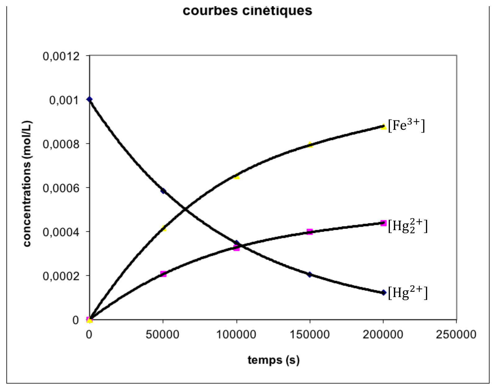
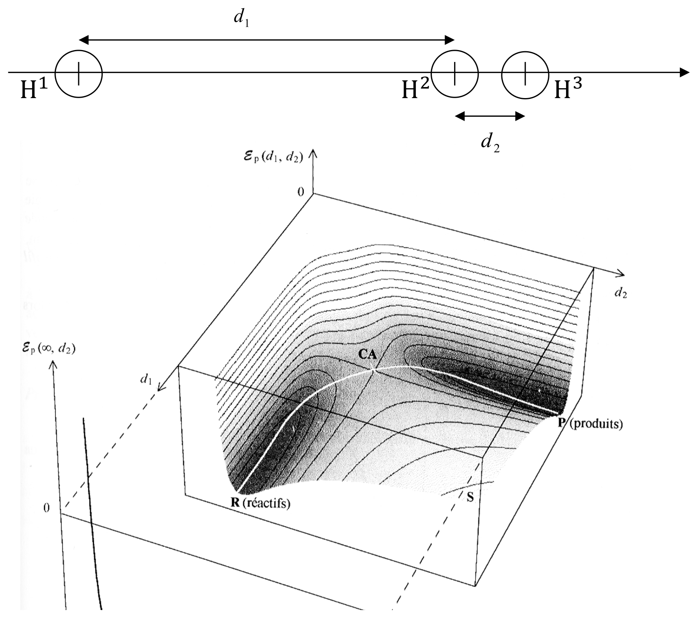
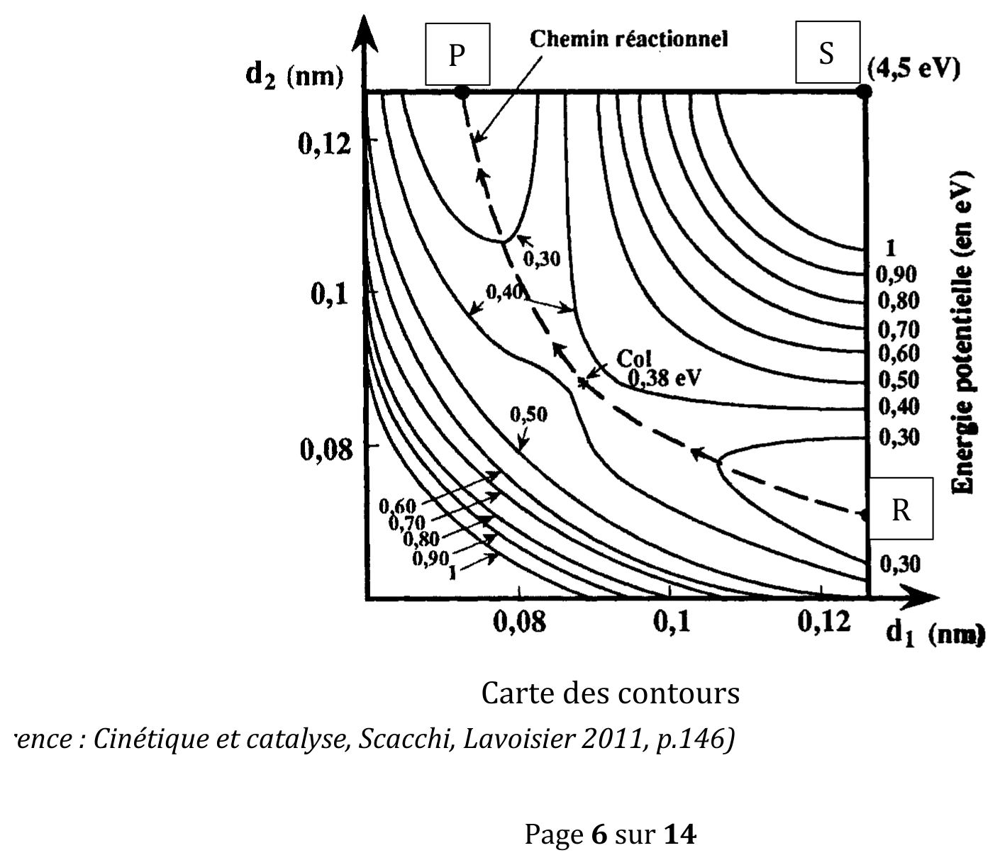

Chimie — Résumé de cours · PCSI · Source : Lycée Janson de Sailly (Paris) · mis au propre le 19/09/2026
Remarque sur la source de ce document
Ce chapitre est construit sous forme de « documents » à partir desquels les notions du cours sont dégagées. La loi d'Arrhenius (citée dans le plan du cours et utilisée dans les exercices) n'apparaît pas sous forme d'une formule encadrée explicite dans les documents fournis : seule la notion d'énergie d'activation microscopique (§3) y est formellement définie. La formule macroscopique de la loi d'Arrhenius n'est donc pas transcrite ici en tant que contenu du professeur, pour ne pas lui attribuer une formulation qu'il n'a pas lui-même rédigée dans ce document.
1. Suivi expérimental d'une réaction
Définition 1 — Courbe cinétique
On appelle courbe cinétique la représentation graphique de la concentration d'un constituant $A_i$ en fonction du temps.
Remarque — méthodes de suivi cinétique
Méthodes chimiques : titrage de $A_i$ dans le milieu réactionnel à chaque instant $t_n$. Ce sont des méthodes destructives : il faut doser des prélèvements, après les avoir « trempés » (versés dans une grande quantité de solvant froid) pour abaisser brusquement température et concentrations, et ainsi bloquer la réaction le temps du titrage.
Méthodes physiques : mesure en temps réel d'une grandeur physique reliée à la concentration :
manomètre : pression $p$, reliée à la quantité de matière totale de gaz par $pV=nRT$ ;
spectrophotomètre : absorbance, loi de Beer-Lambert $A=\epsilon_i\ell[A_i]$ ;
polarimètre : pouvoir rotatoire, loi de Biot $\alpha=[\alpha]_i\ell[A_i]$ (substance chirale).
Les méthodes physiques sont non destructives, automatisables, et permettent d'obtenir un grand nombre de points.
Exemple — réduction des ions mercuriques par les ions ferreux
$$2\text{Hg}^{2+} + 2\text{Fe}^{2+} = \text{Hg}_2^{2+} + 2\text{Fe}^{3+}$$
Suivie par spectrophotométrie (mesure de $[\text{Fe}^{3+}]$), avec $[\text{Hg}^{2+}]_0=1{,}000\times10^{-3}\,\text{mol/L}$ et $[\text{Fe}^{2+}]_0=0{,}100\,\text{mol/L}$ (très large excès). En notant $x$ l'avancement volumique : $[\text{Hg}^{2+}]=1{,}000\times10^{-3}-2x$, $[\text{Fe}^{2+}]=0{,}100-2x$, $[\text{Hg}_2^{2+}]=x$, $[\text{Fe}^{3+}]=2x$. Le réactif Fe$^{2+}$, en large excès, voit sa concentration quasiment inchangée pendant l'expérience (variation maximale de 1 %).

Fig. — Courbes cinétiques expérimentales de la réduction des ions mercuriques par les ions ferreux : $[\text{Fe}^{3+}]$ croît (spectrophotométrie), $[\text{Hg}^{2+}]$ décroît symétriquement, $[\text{Hg}_2^{2+}]$ croît vers un palier ; le réactif Fe$^{2+}$ en large excès n'est pas représenté (concentration quasi constante).
2. Lois de vitesse expérimentales
Remarque — convention
On s'intéresse à des réactions se déroulant dans le sens direct ($Q
Équation de la réaction
Loi de vitesse expérimentale
Ordre global
$S_2O_8^{2-}+2I^-=2SO_4^{2-}+I_2$
$v=k_1[S_2O_8^{2-}][I^-]$
2
$HO^-+C_2H_5Br=C_2H_5OH+Br^-$
$v=k_2[HO^-][C_2H_5Br]$
2
cyclopropane → propène
$v=k_3[\text{cyclopropane}]$
1
$CH_3OCH_3=CH_4+HCHO$
$v=k_4[CH_3OCH_3]^2$
2
$2N_2O_5=4NO_2+O_2$
$v=k_5[N_2O_5]$
1
$2NO+2H_2=2H_2O+N_2$
$v=k_6[NO]^2[H_2]$
3
$2NO+O_2=2NO_2$
$v=k_7[NO]^2[O_2]$
3
$2SO_2+O_2=2SO_3$
$v=k_8[SO_2][SO_3]^{-1/2}$
pas d'ordre
$H_2+Br_2=2HBr$
$v=\dfrac{k[H_2]\sqrt{[Br_2]}}{1+k'[HBr]/[Br_2]}$
pas d'ordre
Théorème 1 — Loi de vitesse d'une réaction admettant un ordre
Pour une réaction $s_AA+s_BB\to\text{produits}$ admettant un ordre :
$$v = k\cdot[A]^\alpha\cdot[B]^\beta$$
avec $v>0$ la vitesse de la réaction (mol·L$^{-1}$·s$^{-1}$), $\alpha,\beta\geq0$ les ordres partiels de A et B (nombres rationnels déterminés expérimentalement, $\alpha+\beta$ = ordre global), $k>0$ la constante cinétique (constante vis-à-vis des concentrations, mais dépendant des autres facteurs cinétiques, notamment la température ; unité dépendant de $\alpha+\beta$).
Remarque — réactions sans ordre
Certaines réactions (ex. $2SO_2+O_2=2SO_3$, $H_2+Br_2=2HBr$ ci-dessus) n'admettent pas de loi de vitesse de la forme du Théorème 1 : on parle de réactions sans ordre. Toutes sortes de lois de vitesse peuvent alors apparaître (concentration des produits, réactifs au dénominateur, sommes de termes…).
3. Profil énergétique d'un acte élémentaire
Définition 2 — Coordonnée de réaction et profil énergétique
La coordonnée de réaction (C.R.) est la projection de toutes les coordonnées d'espace en une seule abscisse curviligne représentant le déroulement de la réaction, en passant par le col d'énergie potentielle. Le profil énergétique est la courbe $E_p=f(\text{C.R.})$.
Définition 3 — État de transition, complexe activé
L'état de transition (noté $\ddagger$) est l'état du système lorsqu'il se trouve au col de potentiel (sommet de la barrière). L'association des atomes à l'état de transition s'appelle le complexe activé : il n'a pas de durée de vie mesurable, donc n'est pas détectable expérimentalement.
Définition 4 — Énergie d'activation microscopique
$$E_{p_a} = E_{p_\ddagger} - E_{p_\text{réactifs}}$$
C'est la hauteur de la barrière de potentiel : l'énergie cinétique initiale minimale que doivent avoir les molécules qui se rencontrent pour donner lieu à un choc réactif.
Fig. 1 — Profils énergétiques d'un acte élémentaire exothermique (gauche) et endothermique (droite) : $E_{p_a}$ = hauteur de la barrière depuis les réactifs (Définition 4).
Exemple — choc colinéaire H + H₂ → H₂ + H
La surface d'énergie potentielle $E_p(d_1,d_2)$ (avec $d_1=d_{H^1H^2}$, $d_2=d_{H^2H^3}$) présente un « col » (point selle) reliant la vallée des réactifs (R) à celle des produits (P) : le chemin réactionnel de plus basse énergie traverse ce col, dont le sommet correspond au complexe activé (Définition 3).

Fig. — Document 3, surface d'énergie potentielle $E_p(d_1,d_2)$ pour le choc colinéaire $\mathrm{H^1+H^2{-}H^3\to H^1{-}H^2+H^3}$ : la vallée des réactifs (R) et celle des produits (P) sont reliées par un col dont le sommet est le complexe activé (CA) (d'après Le Hir, Chimie générale, Masson 1996).

Fig. — Carte des contours associée (projection de la surface précédente) : le col, à 0,38 eV, correspond à la barrière d'activation ; le chemin réactionnel relie les réactifs (R) au col puis aux produits (P) (d'après Scacchi, Cinétique et catalyse, Lavoisier 2011).
4. Mécanismes réactionnels
Définition 5 — Intermédiaire réactionnel
Un intermédiaire réactionnel est une espèce qui ne figure pas dans l'équation chimique d'une réaction mais qui apparaît dans le milieu réactionnel au cours de la transformation. D'un point de vue énergétique, c'est une espèce située à un minimum local d'énergie potentielle, donc possédant une durée de vie et étant détectable (bien qu'en général instable, très réactive, de concentration faible devant celle des réactifs et produits).
Définition 6 — Acte élémentaire
Un acte élémentaire est une étape du chemin réactionnel entre deux minima locaux d'énergie : il n'apparaît pas d'intermédiaire au sein d'un acte élémentaire, qui est donc un processus microscopique irréductible (par exemple, une liaison rompue et une liaison formée simultanément).
Définition 7 — Molécularité
La molécularité $m$ d'un acte élémentaire est le nombre d'entités microscopiques qui se rencontrent effectivement lors de cet acte élémentaire. C'est nécessairement un entier, qui ne peut prendre que trois valeurs :
$m=2$ : cas le plus fréquent, un choc (ex. $H+H_2\to H_2+H$ ; $F+H_2\to FH+H$) ;
$m=3$ : choc rare de trois entités simultanément, nécessaire par exemple lors de la formation d'une liaison covalente par rencontre de deux atomes, la troisième espèce M étant un « partenaire de choc » emportant l'excès d'énergie ($A+B+M\to AB+M^*$).
Attention !
Lorsqu'on écrit un acte élémentaire par une équation chimique, les nombres stœchiométriques représentent le nombre d'entités qui se rencontrent effectivement lors de ce processus microscopique ; leur somme (côté réactifs) est la molécularité $m$. L'écriture de l'équation d'un acte élémentaire est donc unique : il n'est permis ni de multiplier tous les nombres stœchiométriques par un même facteur $\lambda$, ni de simplifier des espèces apparaissant à droite et à gauche.
Définition 8 — Mécanisme réactionnel
Le mécanisme réactionnel est la décomposition en actes élémentaires d'une réaction chimique.
Fig. 2 — Mécanisme réactionnel à trois actes élémentaires, faisant intervenir deux intermédiaires réactionnels $I_1$ et $I_2$ (minima locaux d'énergie, Définitions 5, 6, 8).
Quiz de fin de chapitre
1. Donner la définition d'un intermédiaire réactionnel et d'un acte élémentaire (Définitions 5, 6).
Réponse
Un intermédiaire réactionnel est une espèce qui n'apparaît pas dans l'équation globale de la réaction mais qui existe dans le milieu réactionnel (minimum local d'énergie potentielle). Un acte élémentaire est une étape du mécanisme entre deux minima locaux d'énergie, sans intermédiaire détectable à l'intérieur.
2. Quelles sont les trois valeurs possibles de la molécularité $m$ d'un acte élémentaire (Définition 7), et laquelle est la plus fréquente ?
Réponse
$m=1$ (décomposition spontanée), $m=2$ (choc, le cas le plus fréquent), $m=3$ (choc rare à trois entités, avec un partenaire de choc).
3. La réaction $2NO+O_2=2NO_2$ a pour loi de vitesse $v=k_7[NO]^2[O_2]$ (§2). Quel est l'ordre partiel par rapport à O$_2$, et l'ordre global ?
Réponse
Ordre partiel par rapport à O$_2$ : 1 (exposant de $[O_2]$). Ordre global : $2+1=3$ (somme des exposants, Théorème 1).
4. Pour la réaction $2N_2O_5=4NO_2+O_2$, $v=k_5[N_2O_5]$ avec $k_5=0{,}0021\,\text{s}^{-1}$ à une température donnée et $[N_2O_5]=0{,}05\,\text{mol/L}$. Calculer $v$.
5. Pourquoi le complexe activé (Définition 3) n'est-il jamais détectable expérimentalement, contrairement à un intermédiaire réactionnel (Définition 5) ?
Réponse
Le complexe activé correspond à l'état de transition, situé au sommet (maximum local) de la barrière d'énergie potentielle — il n'a donc, par nature, aucune durée de vie mesurable (toute perturbation infinitésimale le fait évoluer immédiatement vers les réactifs ou les produits). Un intermédiaire réactionnel, en revanche, est situé à un minimum local d'énergie (Définition 5) : il possède une stabilité temporaire, donc une durée de vie non nulle, ce qui le rend détectable.
6. Que se passerait-il si l'on essayait de multiplier par 2 tous les nombres stœchiométriques d'un acte élémentaire $H+H_2\to H_2+H$ pour obtenir $2H+2H_2\to2H_2+2H$ (Attention ! du §4) ?
Réponse
Ce serait incorrect : l'écriture d'un acte élémentaire est unique et ses nombres stœchiométriques ont un sens physique précis (nombre d'entités qui se rencontrent réellement, donc la molécularité). Multiplier par 2 changerait la signification physique de l'équation (elle prétendrait alors décrire un choc à 6 entités simultanées, $m=6$, ce qui ne correspond à aucun processus microscopique réel plausible).
7. Piège classique : peut-on utiliser $v=k[A]^\alpha[B]^\beta$ (Théorème 1) pour une réaction comme $2SO_2+O_2=2SO_3$ (§2) ?
Réponse
Non — cette réaction est explicitement une réaction sans ordre (§2, Remarque) : sa loi de vitesse expérimentale $v=k_8[SO_2][SO_3]^{-1/2}$ fait intervenir un produit de la réaction (SO$_3$) avec un exposant négatif, ce qui ne correspond pas à la forme du Théorème 1 (qui ne concerne que des concentrations de réactifs à exposants positifs).
8. Piège classique : les ordres partiels $\alpha$ et $\beta$ (Théorème 1) sont-ils nécessairement égaux aux nombres stœchiométriques $s_A$ et $s_B$ de l'équation de réaction ?
Réponse
Non — les ordres partiels sont déterminés expérimentalement et ne coïncident pas forcément avec les nombres stœchiométriques de l'équation globale (qui ne renseigne que sur les proportions de matière consommées/produites, pas sur le mécanisme réel). Par exemple, $CH_3OCH_3=CH_4+HCHO$ a un nombre stœchiométrique de 1 pour le réactif, mais un ordre expérimental de 2 (§2, tableau) — une différence qui trahit un mécanisme réactionnel non élémentaire.
9. Synthèse : reliez la Définition 4 (énergie d'activation microscopique) à la Fig. 1 pour expliquer pourquoi une réaction exothermique peut malgré tout être lente à température ambiante.
Réponse
Le caractère exothermique d'une réaction ne renseigne que sur le bilan énergétique global (énergie des produits inférieure à celle des réactifs, Fig. 1 gauche) ; il ne dit rien sur la hauteur $E_{p_a}$ de la barrière d'énergie à franchir (Définition 4), qui peut être très élevée même pour une réaction très exothermique. Si $E_{p_a}$ est grande, très peu de molécules disposent, par agitation thermique, d'une énergie cinétique suffisante pour franchir la barrière lors d'un choc : la réaction est alors lente, malgré son caractère thermodynamiquement favorable.
10. Synthèse : à partir de la Fig. 2 (mécanisme à trois actes élémentaires) et de la Définition 8, expliquer pourquoi la loi de vitesse globale observée expérimentalement (§2) peut être plus complexe que celle d'un acte élémentaire unique, et relier cela à l'exemple de la question 8.
Réponse
Lorsqu'une réaction se déroule selon un mécanisme réactionnel comportant plusieurs actes élémentaires (Fig. 2, Définition 8), la vitesse globale observée résulte de la combinaison des vitesses de chacun de ces actes (souvent limitée par l'acte le plus lent, l'« étape cinétiquement déterminante », ou par un équilibre rapide entre intermédiaires) : la loi de vitesse macroscopique qui en résulte n'a alors aucune raison de coïncider avec une loi simple en puissance des seuls réactifs de l'équation globale. C'est exactement ce qui explique l'écart observé à la question 8 entre le nombre stœchiométrique (1) et l'ordre expérimental (2) de $CH_3OCH_3=CH_4+HCHO$ : cette réaction, bien qu'écrite de façon simple, se déroule en réalité via un mécanisme à plusieurs actes élémentaires (non détaillé dans ce document), qui produit une loi de vitesse d'ordre 2.
Sources
Document source : « Cinétique chimique » (résumé de cours, Lycée Janson de Sailly, Paris)
Programme officiel de Chimie, CPGE 1re année (filière PCSI), bloc « I.2 Évolution temporelle d'un système, mécanismes réactionnels » (arrêté du 5 janvier 2021) : enseignementsup-recherche.gouv.fr